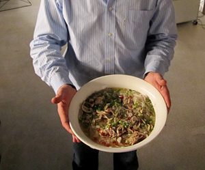

Pho Ga (Vietnamesische Hühnersuppe)
5 von 6Entweder Fond mit Pouletknochen und fleisch, Gemüse und Gewürzen zubereiten (Gewürze zuvor auf offener Flamme anbraten) oder besser Fond von Lan aus Hanoi direkt importieren. Frische Reisnudeln schnell ins heisse Wasser werfen.
Schale mit Reisnudeln und Pouletschnitzli füllen. Fond drüber und etwas Zitronengras, Schnittlauch und Chili obendrauf. Eine Scheibe Limone am Schluss
Fertig ist die Pho. (Danke Lan & Vyelli)
